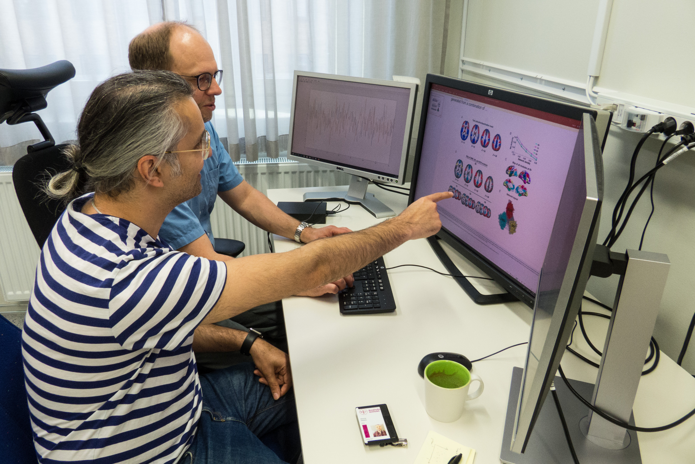
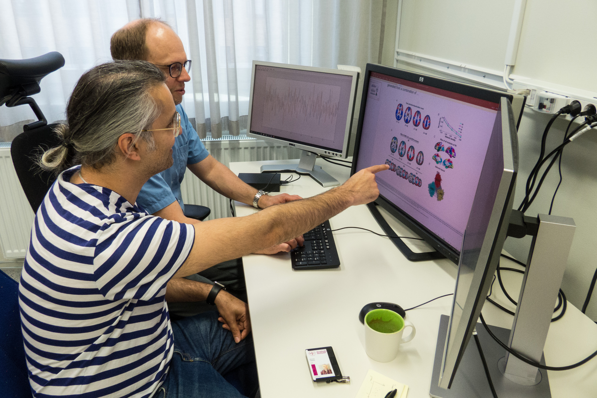
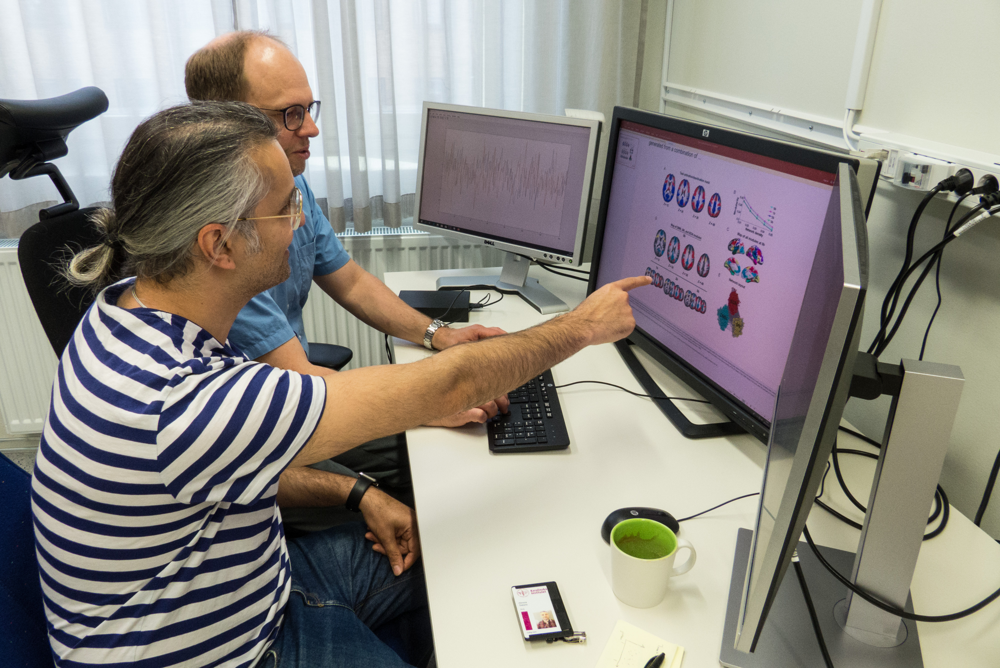
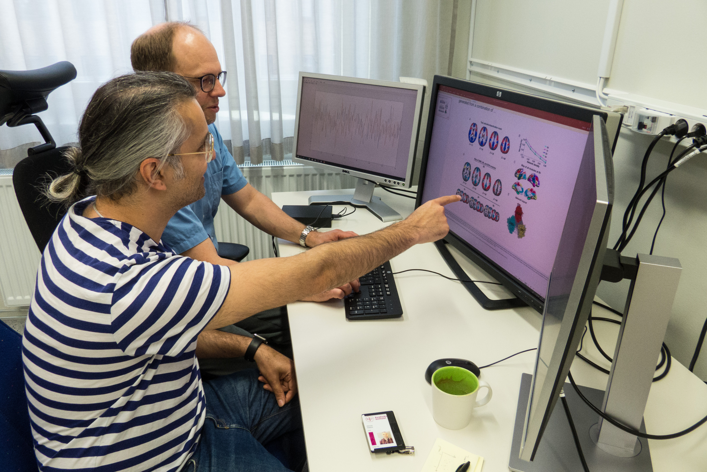

Housed within the Wallenberg Center for Molecular Medicine, our group seeks to explore the brain basis of cognitive decline in aging. Cognitive impairments impede the functioning of older people and create major individual and societal costs. Developing ways to preserve functioning in old age is thus of great importance. However, current knowledge about brain mechanisms that underlie cognitive decline is insufficient to enable effective intervention programs. It is critical to find measurement tools that can predict future severe cognitive decline, such as the one typically observed in demented elderly people, as early as possible, before substantial irreversible damage has been caused to the brain. Our group uses advanced functional magnetic resonance imaging (fMRI) and positron emission tomography (PET) in order to explore the functional and molecular bases of cognitive decline in aging. We hope that this kind of research pave the road for successful design and implementation of intervention programs that may improve cognitive abilities in old age. Our group is graciously supported by the Knut and Alice Wallenberg foundation and the Swedish Research Council.

As a part of our attempts to investigate the brain basis of cognitive decline, we started a large scale study, DyNAMiC, in which advanced multimodal brain mapping techniques were used to provide unique insights into neurocognitive mechanisms of healthy aging.
PRINCIPLE INVESTIGATOR
Prior to become the Wallenberg group leader, Alireza completed his PhD in cognitive neuroscience at Umeå Center for Functional Brain Imaging (UFBI), Umeå university. He undertook postdoctoral fellowship at Aging Research Center (ARC), Karolinska Institute. Alireza then became an assistant professor at ARC. Alireza’s primary research interest concentrates on the brain basis of cognitive decline in aging using advanced functional magnetic resonance imaging (fMRI) and positron emission tomography (PET) techniques. Outside of the lab, you’ll find Alireza on football pitch, spending time with friends, or running in-house lifespan studies with his two kids.

PHD Student
My academic background is in cognitive science and psychology. My PhD project is about how changes in the brain's functional and structural connectome affects various cognitive functions as we are getting older. The aim is to characterize attributes in brain organization to effectively model and predict cognitive decline in aging.
Postdoctoral Fellow
The principal focus of my research is understanding how the hippocampus contributes to memory and cognition in aging by studying its structural and functional connections to distributed regions in the brain. I completed my PhD in psychology at Uppsala University studying age effects on the hippocampus and its role in episodic and spatial memory, specifically assessing memory and age effects in relation to the hippocampus’ longitudinal axis. As part of the DYNAMIC project, I continue to apply this long-axis approach to the study of factors that influence the association between hippocampal connectivity and cognition in aging, such as dopamine neurotransmission and white matter structure.
Project assistant
Nearly all longitudinal studies are prone to drop out due to, for example, participant’s unwillingness to continue, relocation, health issues, or death. Statistical analyses that ignore the reasons for missing data may cause severe bias in conclusions from such studies. I develop statistical methods for longitudinal studies when some data are missing, for example, due to dropout. The methods are applied to study the development of brain function and structure during aging and its relation to cognitive aging based on the data from the Betula study. I am additionally investigating the relationship between cognitive and brain aging within the Lifebrain project and developing statistical methodology within the field of causal inference.
Postdoctoral Fellow
Nearly all longitudinal studies are prone to drop out due to, for example, participant’s unwillingness to continue, relocation, health issues, or death. Statistical analyses that ignore the reasons for missing data may cause severe bias in conclusions from such studies. I develop statistical methods for longitudinal studies when some data are missing, for example, due to dropout. The methods are applied to study the development of brain function and structure during aging and its relation to cognitive aging based on the data from the Betula study. I am additionally investigating the relationship between cognitive and brain aging within the Lifebrain project and developing statistical methodology within the field of causal inference.
Postdoctoral Fellow
Jarkko has solid working and academic experience in the field of neuroimaging dating back to early 2000. He received a PhD degree from the Department of Signal Processing at the Technical University of Tampere in 2016, and completed a two year post-doctoral training at Umeå Center for Functional Brain Imaging (UBFI) during 2017 - 2019 under the supervision of Professor Lars Nyberg. In his earlier career in Turku PET Centre at University of Turku he has accumulated expertise in PET brain imaging, ranging from scanner hardware, to image reconstruction and pharmacokinetic modelling. His current research interests at UFBI include cognitive neuroscience of ageing with a specific focus on neurotransmission. In particular, he wants to elucidate how age-related declines in neurotransmission are linked to age-related losses in cognition, using PET and MRI, and both simultaneously to map the neurobiological underpinnings of ageing.
Radiologi nurse
I join the Dynamic team in august 2018. I work 50% with Dynamic and 50% as an radiologi nurse. In this project I help recruit new participants to the study and administer times for them to participate. I also help with data collection for the study by cognitive tests, blood samples etc.